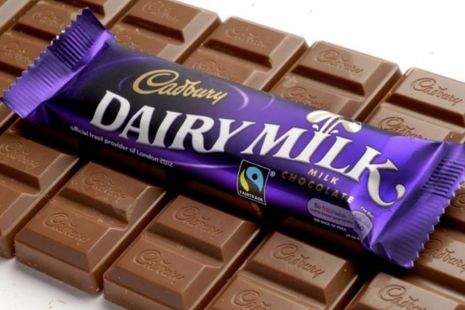
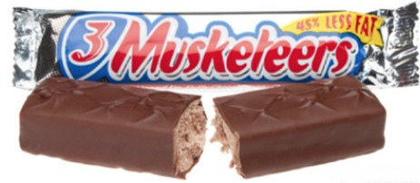
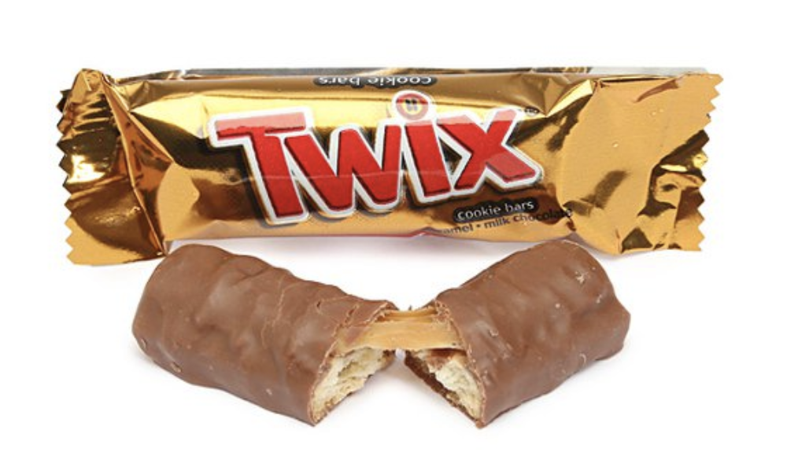
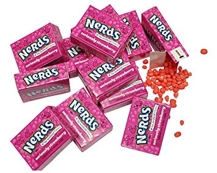
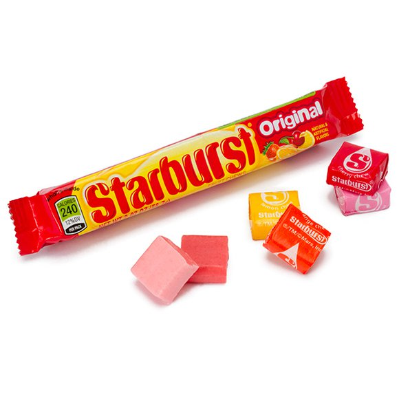
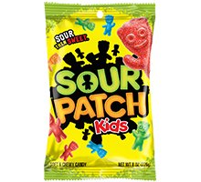
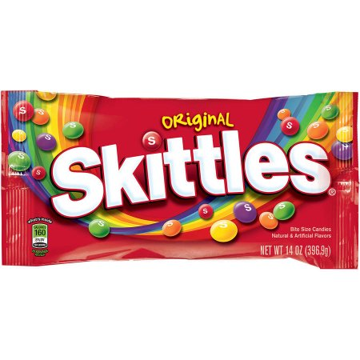
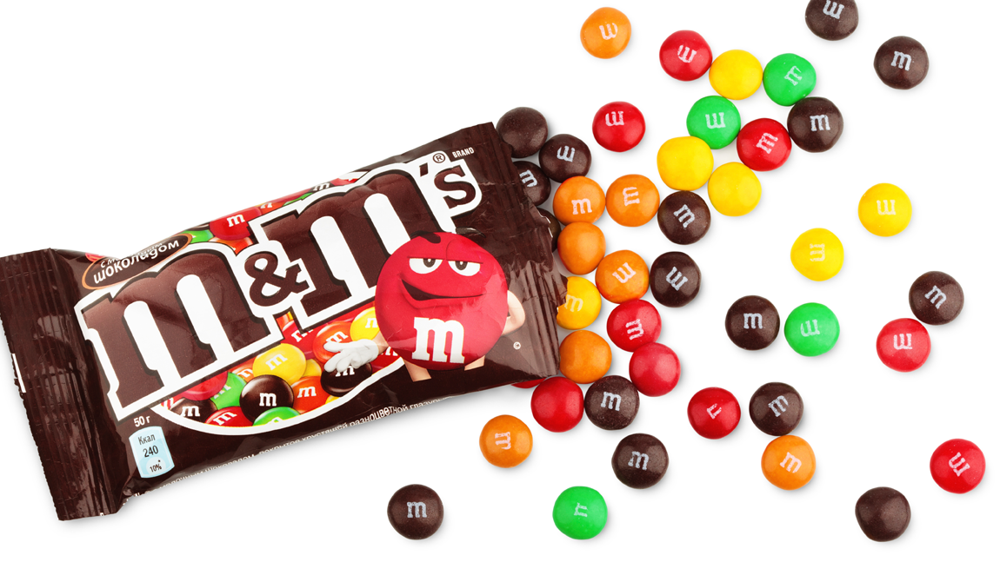
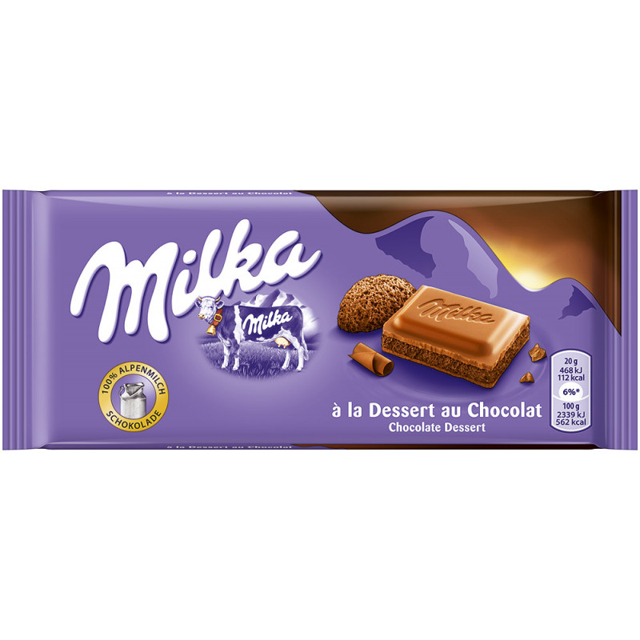

Ban Ban's Candy Emporium
On this page you can learn more about Bannon's favorite Candies! These are the candies that inspired her to create Ban Ban's Candy Emporium. Make sure that next time you stop into one of our stores you try these classics!









Cadbury Dairy Milk is a brand of milk chocolate manufactured by Cadbury. It was introduced in the United Kingdom in 1905 and now consists of a number of products. Every product in the Dairy Milk line is made with exclusively milk chocolate. In 2014, Dairy Milk was ranked the best-selling chocolate bar in the UK. It is manufactured and distributed by the Hershey Company in the U.S. under licence from Cadbury.
3 Musketeers is a candy bar made in the United States and Canada by Mars, Incorporated. It is a candy bar consisting of chocolate-covered fluffy whipped nougat. It is similar to the Milky Way bar (lacking Caramel topping). The 3 Musketeers Bar was the third brand produced and manufactured by M&M/Mars, introduced in 1932.
Twix is a chocolate bar containing biscuit made by Mars, Inc., consisting of a biscuit applied with other confectionery toppings and coatings (most frequently caramel and milk chocolate).Twix bars are packaged with two or four bars in a package. Miniature and other variations of Twix bars are also available.
Nerds are an American candy sold by Nestlé. Their unusual shape and thin candy-coating is comparable to rock candy. With their anthropomorphic covers, Nerds usually contain two flavors per box, and each flavor has a separate compartment and opening.[citation needed] Larger packages may contain various colors—sometimes referred to as "Rainbow Nerds." Smaller packages may contain either one flavor only, or one flavor with pieces of another.
Starburst (originally known as Opal Fruits) is the brand name of a box-shaped, fruit-flavored soft taffy candy manufactured by The Wrigley Company, a subsidiary of Mars, Incorporated. Starburst has many different varieties such as Tropical, Sour, FaveReds, Very Berry, Superfruit Flavor and Original. The original flavors include: strawberry, lemon, orange, and cherry (changed from the initial lime). The tropical flavors include: strawberry banana, pina colada, cherry kiwi, and mango melon.
Sour Patch Kids (Known as Very Bad Kids in France, and as Maynards Sour Patch Kids in the UK) are a soft candy with a coating of invert sugar and sour sugar (a combination of citric acid, tartaric acid and sugar). Its slogan, "Sour. Sweet. Gone.", refers to the sour-to-sweet taste of the candy.
Skittles is a brand of fruit-flavoured sweets, currently produced and marketed by the Wrigley Company, a division of Mars, Inc.. Skittles consist of hard sugar shells imprinted with the letter "S". The interior consists mainly of sugar, corn syrup, and hydrogenated palm kernel oil along with fruit juice, citric acid, and natural and artificial flavors. The confectionery has been sold in a variety of flavor collections, such as Tropical, Wildberry, Dessert and Sour.
M&M's are "colorful button-shaped chocolates", each of which has the letter "m" printed in lower case on one side, surrounds a filling which varies depending upon the variety of M&M's. The original candy had a milk chocolate filling which, upon introducing other variations, was branded as the "plain" variety. "Peanut" M&M's, which feature a peanut coated in milk chocolate, and finally a candy shell, were the first variation to be introduced, and they remain a regular variety. Numerous other variations have been introduced, some of which are regular widespread varieties (such as "peanut butter", "almond", "pretzel", "crispy", "dark chocolate", and "caramel") while others are limited in duration or geographic availability.
Milka is a brand of chocolate confection which originated in Switzerland in 1901 and has been manufactured internationally by the US confectionery company Mondelēz International (formerly known as Kraft Foods) since 1990. For more than 100 years, Milka has been primarily produced in Lörrach, Germany, producing about 140,000 tonnes of chocolate in 2012. It is sold in bars and a number of novelty shapes for Easter and Christmas. Milka also produces chocolate-covered cookies and biscuits.
Please Note that Ban Ban's Candy Emporium is not a real establishment it was just made up for my CS2 class project!